五大領域的永續推動
舞荳咖啡在永續發展層面已具完整性推動,涵蓋環境、社會、經濟、文化與教育五大領域,同時實踐 ESG(環境、社會、治理)精神,建立「地方 × 國際」雙向永續鏈結。
環境面
減碳包裝、循環設計、永續農業。
社會面
小農共榮、地方創生、在地就業。
經濟面
公辦民營據點、永續商業模式。
文化面
宗教文創、地方導覽與文化教育。
教育面
青年培訓、學術合作與知識傳承。
未來合作與發展方向
一、學校產學合作
與佛光大學傳媒系產學合作,開設「咖啡文化」「品牌經營」「食農教育」「地方文化導覽實務」等交流,提供學生工作機會,建立「青年創業輔導產品計畫」,培養下一代地方創生與永續經營人才。
二、業內合作與客製化開發
以「品牌整合設計 × 專業烘焙技術 × 文創包裝」為核心:企業行銷合作(客製化掛耳、伴手禮、聯名包裝)、觀光伴手商品(溫泉、農產主題咖啡包)、飯店餐飲合作(專屬風味豆與沖煮方案)、文化活動合作(音樂、藝展、茶會、書展飲品支援)。
三、行動咖啡與出走活動
行動咖啡人走進旅遊景點、市集、校園與公部門活動;出走計畫(Barista on the Move)讓咖啡師走入社區、學校、企業,以「現場手沖 × 故事分享 × 品味教育」推廣咖啡文化;社區巡迴「一日咖啡日」;使用再生設備與可回收包材,推動「永續行動咖啡人」理念。
永續的輪轉|一步一步,畫出這個圓
這個圓,不是規劃出來的,是走出來的——我們公司的過程,是先和學生合作開始,再一步一步把每個環節補上:
產學共創是起點
一切從和佛光大學學生合作開始——玩咖系列就是第一步。年輕人帶來想法,我們帶著經驗,一起把第一個產品做出來。
國際化的養分
赴日本青森、各地產地與職人交流——國際化是所有產品設計的養分,也是產學合作最重要的一環。
在宜蘭研發成產品
把學到的講究帶回土地:在地金棗、在地好米、ICO 認證咖啡豆——黑糖金磚、米菓條、金棗派、掛耳禮盒,一件一件做出來。
AI 行銷 × 媒體行銷
好產品也要被看見:用 AI 工具與媒體行銷(官網、IG、社群、影像)把故事說出去——行銷補上,企業的循環才完整。
咖啡館與官網
產品最終落地於時間到咖啡館門市與官網線上購物(綠界/舞荳購物網)——你喝到、吃到、買到的每一份,都是永續的實踐。
回饋土地與人
販售的收益,回到在地小農採購、學生工作機會與下一輪的研發交流——圓,就這樣繼續轉。
在地創生|從宜蘭土地長出來的產品
永續不是口號,是把宜蘭的物產做成一件一件真實的產品——在地金棗、在地好米,慢火熬煮、低溫烘焙,讓土地的味道被更多人喝到、吃到。
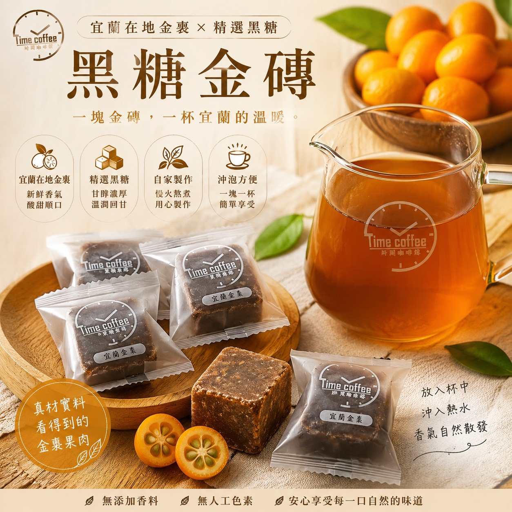
黑糖金磚|宜蘭在地金棗 × 精選黑糖
一塊金磚,一杯宜蘭的溫暖。自家慢火熬煮、真材實料看得到金棗果肉;放入杯中沖入熱水,香氣自然散發。無添加香料、無人工色素。店內「宜蘭金磚黑糖金棗茶」用的就是它。
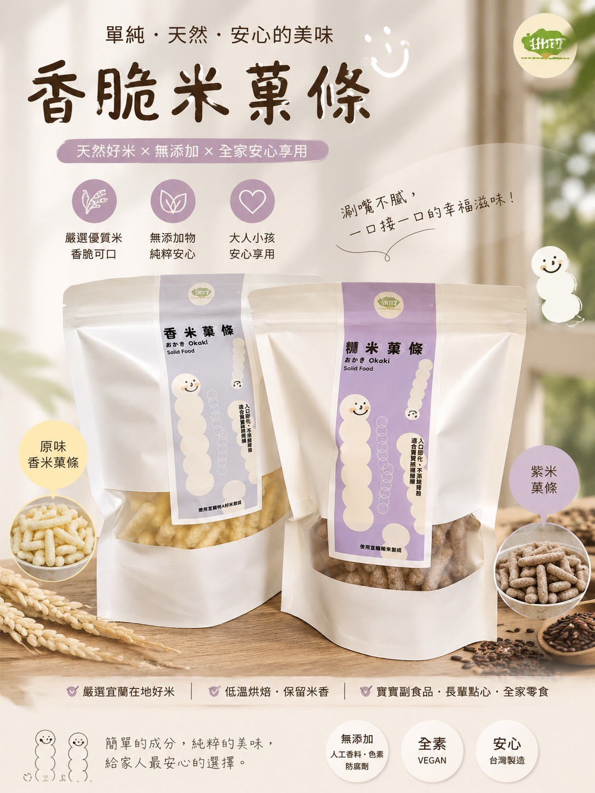
香脆米菓條|嚴選宜蘭在地好米
原味香米與紫米兩款,低溫烘焙保留米香;無添加人工香料、色素、防腐劑,全素。入口即化,從寶寶副食品、長輩點心到全家零食都安心。
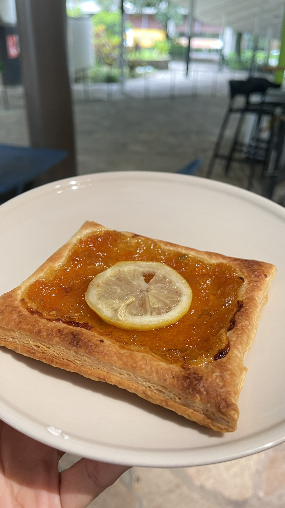
金棗派|地方創生的甜點實踐
把宜蘭金棗熬成餡,鋪在酥皮上手工烘烤——用一塊派,讓在地果物走進日常。店內時令點心供應,以現場為主。
產學共創|和佛光大學一起「玩咖」
我們與佛光大學傳媒系產學合作,從產品開發、包裝設計到影像行銷,學生實際參與每個環節——玩咖系列掛耳咖啡就是共創成果,用咖啡說宜蘭的故事。過程紀錄:
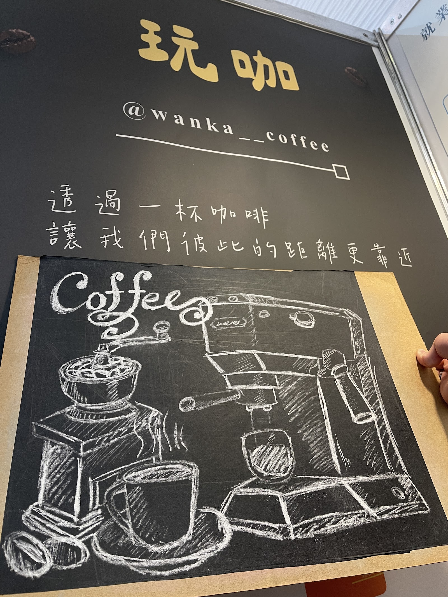
「透過一杯咖啡,讓我們彼此的距離更靠近」——玩咖的品牌黑板,出自學生之手。IG:@wanka__coffee
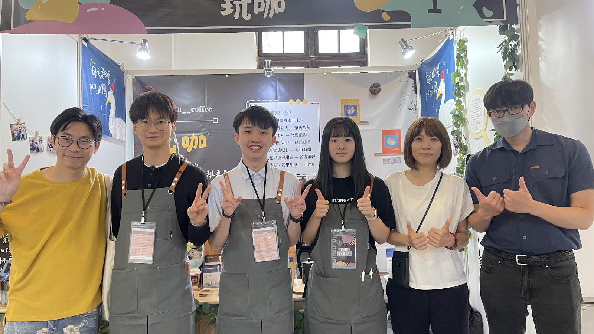
玩咖團隊在展場——從沖煮、解說到販售,每一關學生都自己來。
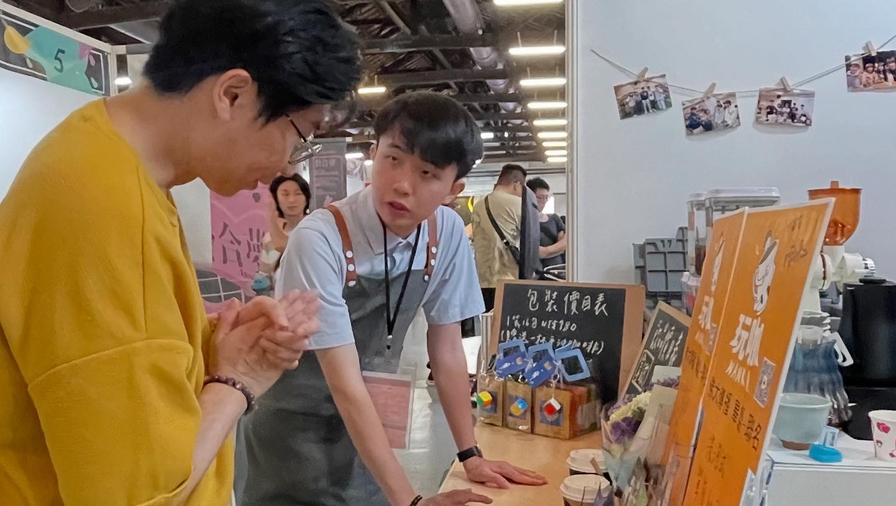
面對面向來賓介紹風味與包裝——課堂學的,在攤位上真刀真槍練。
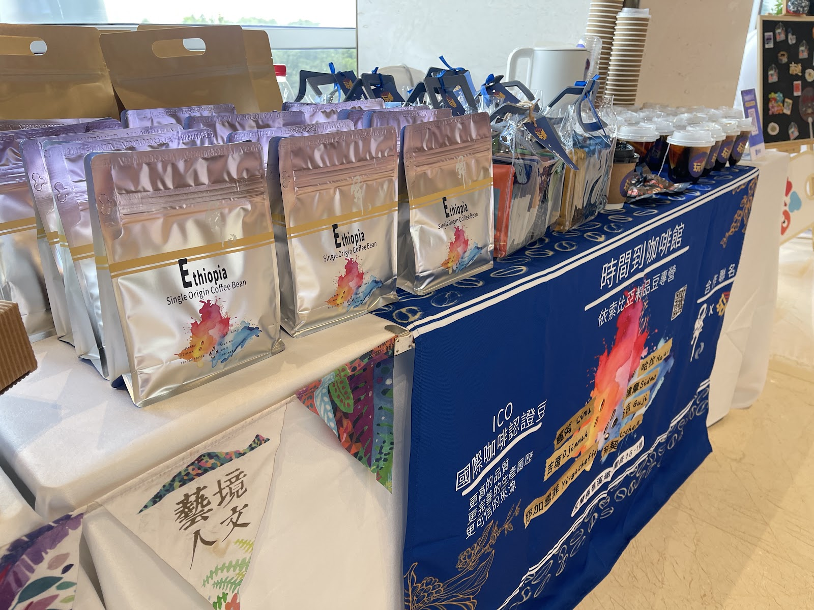
時間到咖啡館 × 玩咖 合作聯名展售——ICO 認證衣索比亞品豆與學生設計包裝同台亮相。
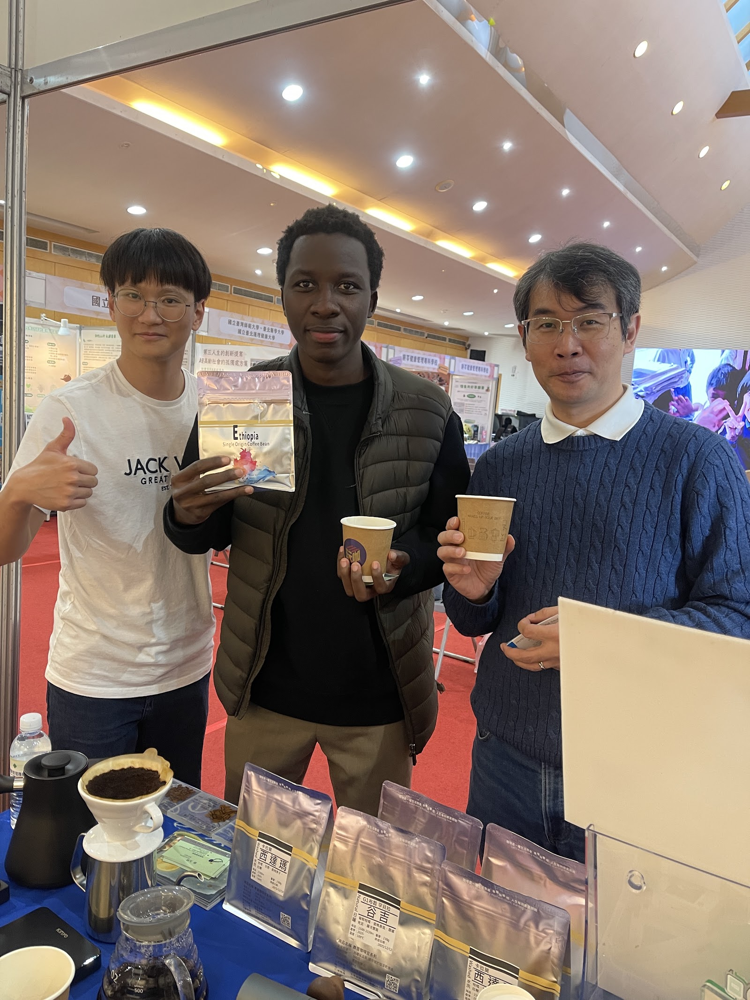
來自世界各地的朋友在展場品嚐——一杯咖啡,就是最好的交流語言。
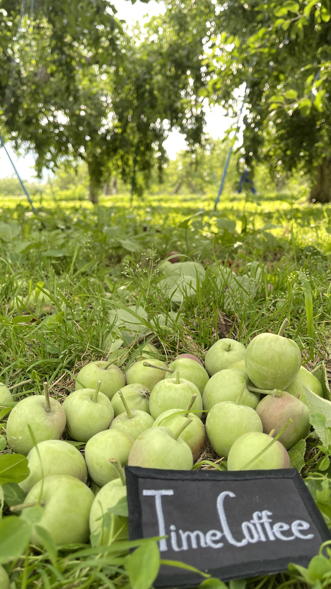
走進產地——永續從了解土地開始,Time Coffee 的腳步一直在田裡。
國際交流|向世界學習
國際化,是我們所有產品設計的養分——沒有走出去看過世界,就長不出這些產品;這也是產學合作裡最重要的一環。我們赴日本青森與各地參訪茶舖、果物產地,學習職人如何把「一項在地物產」經營成代代相傳的品牌,再把這些養分帶回宜蘭,化為設計與風味。
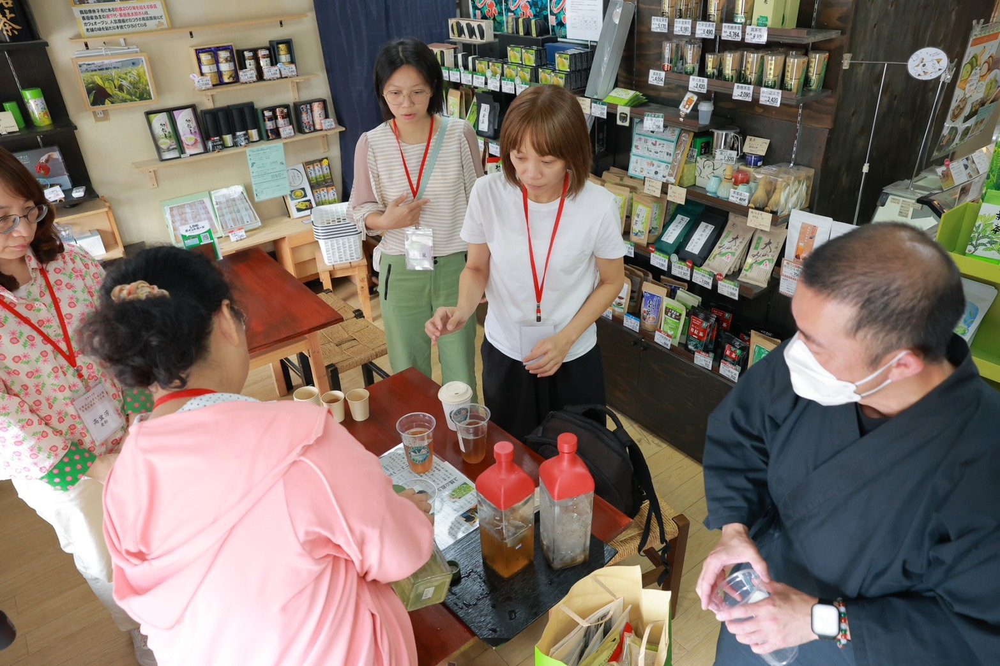
走進日本在地茶舖,與職人交流冷泡與品飲文化——一間小店如何把一片茶葉做到極致。
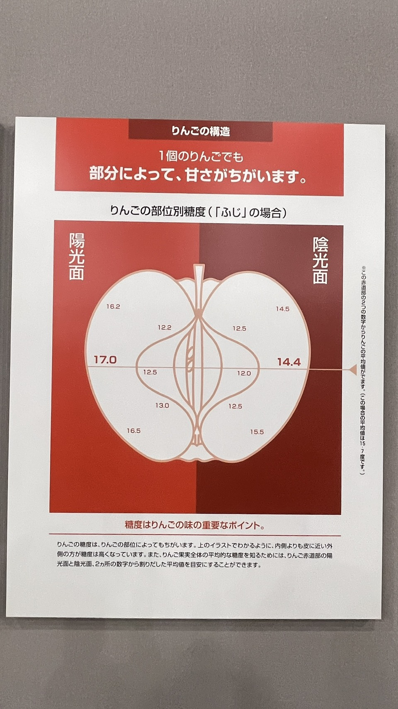
在青森學到:連一顆蘋果的甜度都因部位而不同——產地對細節的講究,提醒我們對金棗、對咖啡也要如此。
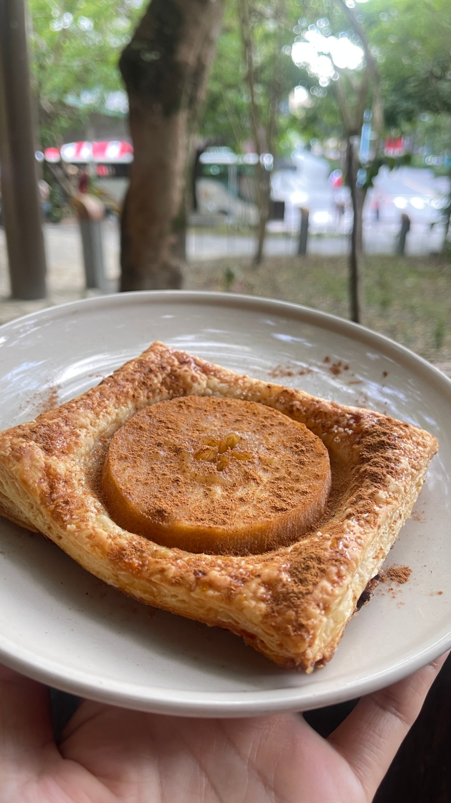
發想變成產品——青森的蘋果之旅回到台灣,成了店裡的「青森燉蘋果派」:整圓燉蘋果鋪在手工酥皮上,撒上肉桂現烤。旅途學到的,最後都端上你的桌。